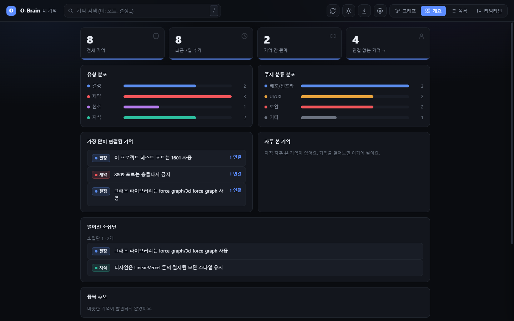
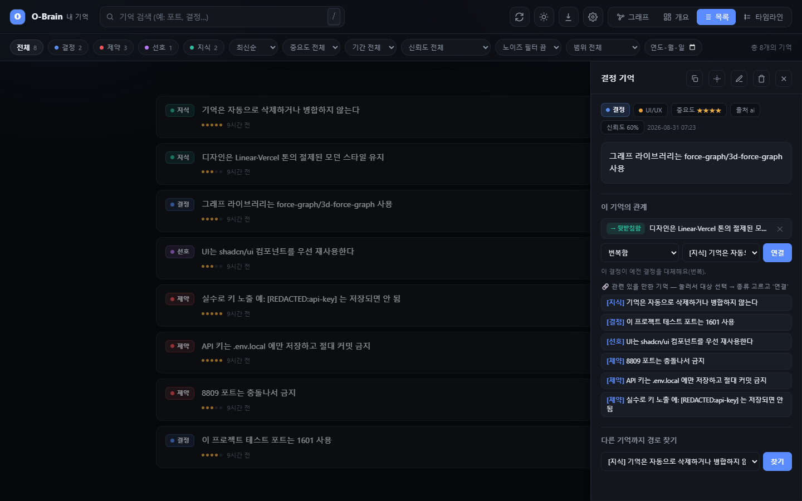
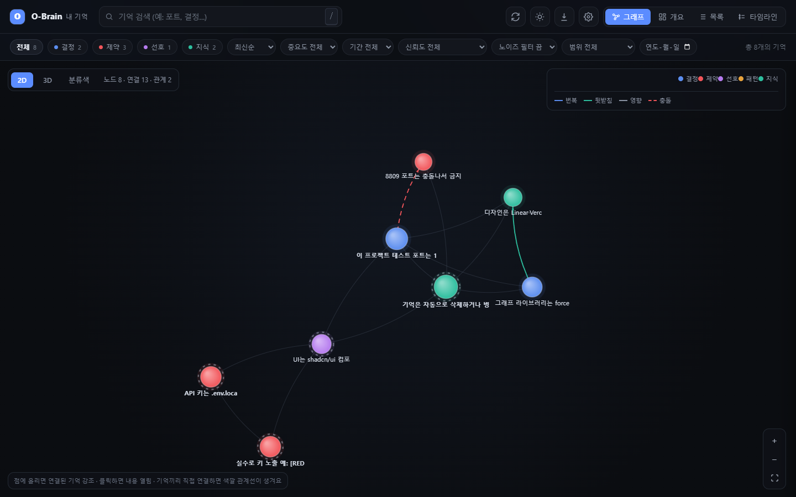
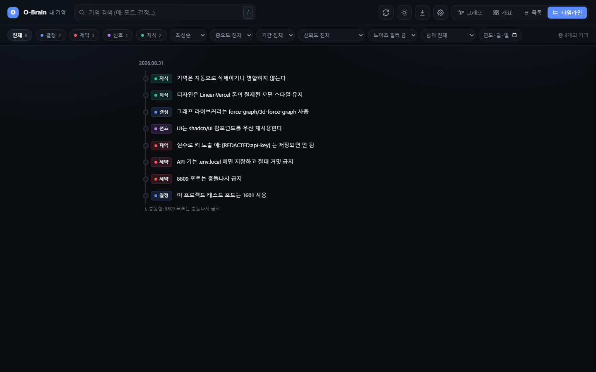
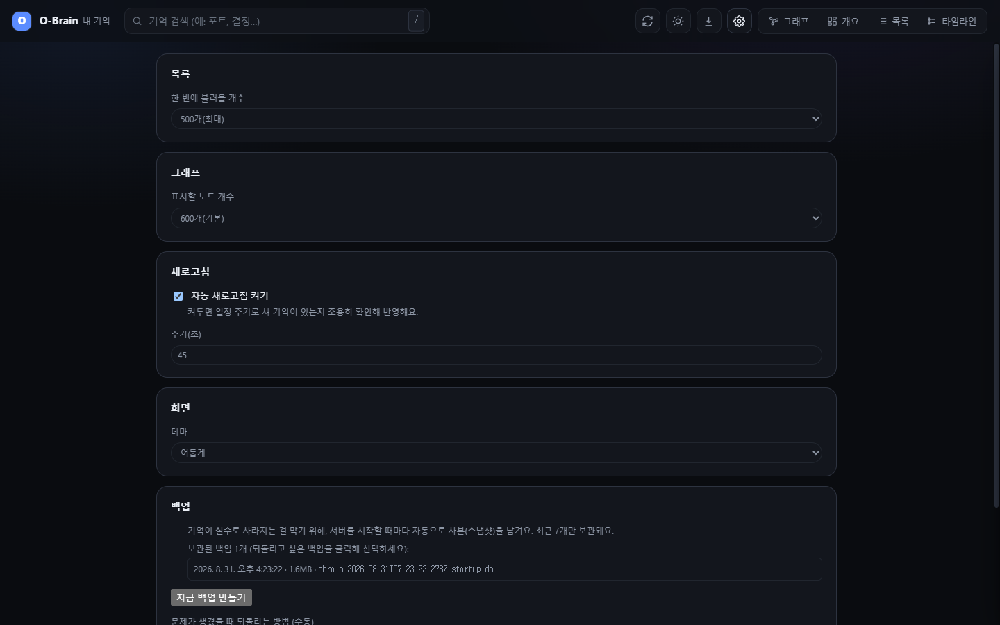

English · HTML · Codex 저장소 · 포팅 전 원본
O-Brain은 Codex 대화에서 사용자가 확정한 결정·제약·선호·지식을 내 컴퓨터의 SQLite DB에 저장하고, 다음 작업에서 관련 기억을 다시 보여주는 1인용 로컬 메모리 플러그인입니다. 2D/3D 그래프, 목록, 타임라인, 검색, 백업 화면도 함께 제공합니다.
공식 소스 저장소: github.com/sodam-ai/SoDam_O-Brain-Codex. 이 문서는 Codex 포팅판의 설치와 사용 방법을 설명합니다.
“로컬에서 사용”한다는 말은 설치 파일도 개인 폴더에서만 받아야 한다는 뜻이 아닙니다. 누구나 위 공식 GitHub 저장소에서 내려받아 설치하고, 실행과 기억 저장만 자신의 컴퓨터 안에서 합니다. 아래 명령에는 제작자의 개인 작업 경로가 들어가지 않습니다.
| 기능 | 설명 |
|---|---|
| 자동 저장 | Codex Stop 훅이 최근 대화에서 확정 문장을 찾아 저장합니다. 질문·잡담·AI 답변은 저장 대상에서 제외합니다. |
| 자동 되읽기 | SessionStart 훅이 현재 프로젝트와 관련된 기억을 소량 골라 Codex 문맥에 넣습니다. |
| MCP 7개 도구 | 검색, 저장, 단건 조회, 관련 기억, 타임라인, 관계 추가, 카테고리 목록을 제공합니다. |
| 로컬 검색 | FTS5 키워드 검색과 384차원 로컬 임베딩 검색을 함께 사용합니다. |
| 시각화 | 개요, 목록/상세, 2D·3D 그래프, 타임라인, 설정 화면을 제공합니다. |
| 데이터 안전 | SQLite WAL, 온라인 백업, 입력 제한, 시크릿 가림, 삭제 전 백업을 사용합니다. |
| 호환 파서 | Codex response_item 로그와 원본 Claude Code 로그를 모두 읽습니다. Codex 포팅의 기본 도구 값은 codex입니다. |
O-Brain은 사용자의 모든 말을 무조건 저장하지 않습니다. “하기로 정했다”, “반드시”, “선호한다”처럼 확정 신호가 있는 사용자 문장을 규칙으로 선별합니다. 중요한 내용은 $o-brain-remember로 직접 저장할 수 있습니다.
| 항목 | 현재 상태 |
|---|---|
| 주 사용 환경 | Windows 10/11 + Codex 앱/CLI |
| 실제 검증 버전 | Node.js v26.7.0, npm 11.6.2, Codex CLI 0.155.1 |
| 네트워크 | 설치·의존성·최초 모델 다운로드에 필요. 기억 저장과 검색은 로컬 처리 |
| 모바일 | 390px 너비 화면 표시를 확인했지만 서버가 같은 PC 전용이므로 휴대전화 원격 접속은 지원하지 않음 |
| 로그인·계정 | O-Brain 자체 로그인과 계정 시스템 없음. Codex 사용 권한은 OpenAI 계정 영역 |
| 외부 DB·결제 | O-Brain 전용 외부 DB와 결제 기능 없음 |
| macOS/Linux | 사용자 폴더 기본값은 코드에 있으나 이 릴리스의 실제 설치·UI 흐름은 미확인 |
2026-09-23 검증: npm run verify(lint·타입·기능·규모·브라우저·패키지 검사), 운영 의존성 감사, 추적 파일 비밀키 패턴 검사가 통과했습니다. 설치된 플러그인의 MCP 응답과 실제 개인 DB의 읽기 전용 무결성도 확인했습니다. 브라우저 E2E는 임시 DB로 실행했으며, 당시 개인 대시보드 서버는 꺼져 있었습니다. 새 Codex 작업에서 자동 주입·종료 저장을 연속으로 수행하는 실제 사용 흐름과 개인 데이터 화면의 시각 검수는 미확인입니다.
확인한 범위와 미확인 범위를 나눠 적었습니다. “지원”은 현재 코드와 테스트에서 확인한 범위를 뜻하며, 모든 PC 조합을 보증한다는 뜻은 아닙니다.
처음 설치할 프로그램:
| 프로그램 | 필요한 이유 | 공식 다운로드·확인 위치 |
|---|---|---|
| Windows 10/11 컴퓨터 | 이 릴리스에서 실제 검증한 운영체제 | Windows에 기본 포함된 PowerShell 사용 |
| Node.js 26.7.x + npm 11.x | 로컬 서버·DB·테스트 실행 | Node.js v26.7.0 공식 다운로드 |
| Codex 앱 또는 Codex CLI | O-Brain 플러그인을 불러오고 대화를 처리 | Codex 앱 안내 · Codex CLI 안내 |
| Git(선택) | git clone 방식과 이후 업데이트에 사용 |
Git for Windows 공식 설치. ZIP 또는 원격 Marketplace 방식이면 생략 가능 |
최초 npm ci와 임베딩 모델 다운로드에는 인터넷 연결이 필요합니다. Node 의존성과 로컬 모델 캐시를 위해 1GB 이상의 여유 공간을 권장합니다.
처음 보는 용어:
| 용어 | 쉬운 뜻 |
|---|---|
| 폴더 경로 | 파일 주소입니다. 예: C:\Tools\SoDam_O-Brain-Codex |
| 명령 | PowerShell에 한 줄씩 입력하고 Enter를 누르는 글입니다. |
| 플러그인 | Codex에 기능을 추가하는 설치 묶음입니다. |
| 로컬 | 현재 컴퓨터 안에서 처리한다는 뜻입니다. |
| DB(SQLite) | 기억을 한 파일에 정리하는 데이터베이스입니다. |
| 포트 | 브라우저가 로컬 서버를 찾는 번호입니다. 기본값은 7740입니다. |
확인 명령은 한 줄씩 실행합니다:
node --version
npm --version
codex --version
이 포팅을 검증한 버전은 Node.js v26.7.0, npm 11.6.2, Codex CLI 0.155.1입니다. 다른 버전은 동작할 수 있지만 이 문서에서 확인했다고 보장하지 않습니다.
공식 다운로드 위치는 SoDam_O-Brain-Codex GitHub 저장소입니다. 프로그램은 내 컴퓨터에서 실행되고 기억도 로컬에 저장되지만, 설치 파일은 GitHub에서 받습니다. Codex 포팅 파일이 반영된 브랜치나 릴리스를 사용하세요.
| 원하는 방법 | 선택 기준 |
|---|---|
| GitHub 원격 Marketplace | 가장 짧은 명령으로 설치하고 싶을 때 |
| Git clone | 업데이트와 소스 확인을 쉽게 하고 싶을 때 |
| Download ZIP | Git 명령을 사용하기 어려울 때 |
| 독립 웹 앱 | Codex 플러그인 없이 대시보드와 로컬 DB만 시험할 때 |
GitHub 페이지에서 먼저 현재 브랜치 또는 릴리스에 .agents/plugins/marketplace.json과 plugins/o-brain/이 있는지 확인하세요. 이 두 항목이 보이지 않으면 Codex 포팅판이 아직 그 브랜치에 배포되지 않은 상태입니다.
Git clone이나 ZIP 다운로드 없이 설치하는 방식입니다. Codex 포팅 파일이 GitHub 저장소에 반영된 뒤 사용할 수 있습니다.
codex plugin marketplace add sodam-ai/SoDam_O-Brain-Codex
codex plugin add o-brain@o-brain-codex
전체 HTTPS Git URL도 지원합니다.
codex plugin marketplace add https://github.com/sodam-ai/SoDam_O-Brain-Codex.git
codex plugin add o-brain@o-brain-codex
저장소에 Codex 포팅 파일이 아직 반영되지 않은 브랜치는 이 설치 명령과 호환되지 않습니다.
git clone https://github.com/sodam-ai/SoDam_O-Brain-Codex.git
cd "SoDam_O-Brain-Codex"
codex plugin marketplace add .
codex plugin add o-brain@o-brain-codex
codex plugin marketplace add .
codex plugin add o-brain@o-brain-codex
Git clone 또는 ZIP으로 받은 SoDam_O-Brain-Codex 폴더 안에서 PowerShell을 열고 실행합니다.
codex plugin marketplace add .
codex plugin add o-brain@o-brain-codex
설치 확인:
codex plugin list | Select-String "o-brain"
Codex를 새 작업으로 열고 다음처럼 요청합니다.
$o-brain-setup 스킬로 처음 설정하고 자체 테스트까지 실행해줘.
수동으로 할 때는 설치한 플러그인 루트에서 다음을 실행합니다.
node scripts/o-brain-cli.mjs setup
node scripts/o-brain-cli.mjs selftest
설정은 npm ci로 잠금 파일에 고정된 의존성을 설치합니다. 최초 검색 또는 테스트 때 sentence-transformers/all-MiniLM-L6-v2 모델이 내려받아질 수 있습니다.
먼저 $o-brain-backup으로 백업합니다.
GitHub 원격 Marketplace로 설치했다면 다음 순서로 갱신합니다.
codex plugin marketplace upgrade o-brain-codex
codex plugin remove o-brain@o-brain-codex
codex plugin add o-brain@o-brain-codex
Git clone, ZIP 또는 로컬 폴더 방식이면 소스 폴더를 먼저 새 버전으로 바꾼 뒤 다음 명령으로 플러그인 캐시를 갱신합니다.
codex plugin remove o-brain@o-brain-codex
codex plugin add o-brain@o-brain-codex
다시 $o-brain-setup을 실행합니다. 개인 기억 DB는 플러그인 캐시 밖에 있어 일반적인 재설치로 삭제되지 않습니다.
codex plugin remove o-brain@o-brain-codex
codex plugin marketplace remove o-brain-codex
이 명령은 플러그인을 제거하지만 개인 DB는 자동 삭제하지 않습니다. 데이터를 삭제하려면 먼저 백업한 뒤 %LOCALAPPDATA%\SoDamAI\O-Brain 폴더를 사용자가 직접 확인하고 삭제해야 합니다.
$o-brain-setup을 한 번 실행합니다.Stop 훅이 시크릿을 가린 뒤 후보를 저장합니다.SessionStart 훅이 관련 기억을 찾아 문맥에 넣습니다.$o-brain-open을 실행합니다.독립 웹 앱만 시험하려면:
cd app
npm ci
npm start
브라우저에서 http://127.0.0.1:7740/을 엽니다. 직접 npm start로 실행하면 데이터 기본 위치는 app/data/입니다. Codex 플러그인 실행 경로는 사용자 데이터 폴더를 기본으로 사용합니다.
$o-brain-open은 필요하면 서버를 백그라운드에서 시작하고 브라우저를 엽니다.npm start 서버는 실행한 PowerShell에서 Ctrl+C로 종료합니다.stop 명령이 아직 없습니다. 작업 관리자를 쓰기 전에 저장·백업 완료를 확인하세요.채팅창에 /o-brain:open을 입력하고 자동완성의 o-brain:open 항목을 선택한 다음 메시지를 전송하세요. 다른 명령도 아래 표의 같은 이름으로 선택합니다. Codex에서는 슬래시 메뉴 선택 시 실행할 스킬이 메시지에 첨부됩니다. 목록이 보이지 않으면 Codex를 완전히 종료하고 다시 열어 설치 정보를 새로 불러오세요. 데스크톱이 사용하는 Codex 설정 폴더에 플러그인이 설치되어 있어야 합니다. 메뉴를 선택하지 않고 명령 문자열만 전송하는 동작은 별도로 검증하지 않았습니다.
| 원본 Claude Code 명령 | Codex 메뉴 이름 | Codex 명시적 호출 | 동작 |
|---|---|---|---|
/o-brain:open |
o-brain:open |
$o-brain:open |
서버 확인·시작 후 대시보드 열기 |
/o-brain:status |
o-brain:status |
$o-brain:status |
기억 수·최근 기억·훅 상태 확인 |
/o-brain:backup |
o-brain:backup |
$o-brain:backup |
안전한 SQLite 백업 |
/o-brain:selftest |
o-brain:selftest |
$o-brain:selftest |
임시 DB에서 자체 검사 |
/o-brain:remember |
o-brain:remember |
$o-brain:remember |
확정된 사용자 결정만 중복 확인 후 저장 |
/o-brain:link |
o-brain:link |
$o-brain:link |
사용자 확인을 받은 기억 관계만 연결 |
추가 설치 도우미는 $o-brain:setup입니다. 아래 기존 $o-brain-* 스킬도 유지합니다. 데스크톱과 CLI의 Codex 홈이 다르면 설치 위치도 다릅니다. CLI에서만 실행에 성공했다고 데스크톱 설치가 완료된 것은 아닙니다. 메뉴가 갱신되지 않으면 Codex를 다시 시작하여 확인하세요.
| 스킬 | 용도 |
|---|---|
$o-brain-setup |
최초 의존성 설치와 자체 테스트 |
$o-brain-open |
로컬 서버 확인·시작 후 대시보드 열기 |
$o-brain-status |
기억 수, 최근 기억, 데이터 위치 확인 |
$o-brain-backup |
실행 중에도 안전한 SQLite 스냅샷 생성 |
$o-brain-selftest |
실제 개인 DB와 분리된 테스트 DB로 핵심 기능 검사 |
$o-brain-remember |
현재 대화에서 확정된 내용만 수동 저장 |
$o-brain-link |
사용자가 확인한 기억 관계만 연결 |
| 도구 | 용도 |
|---|---|
search_memory |
의미+키워드 검색 |
save_memory |
시크릿 가림 후 기억 저장 |
get_memory |
기억 1건 전체 조회 |
get_related |
직접 연결된 기억 조회 |
get_timeline |
주제별 시간 흐름 조회 |
add_relation |
SUPERSEDES, SUPPORTS, INFLUENCES, CONTRADICTS 관계 추가 |
list_categories |
카테고리별 기억 수 조회 |
관계 종류는 O-Brain이 자동 확정하지 않습니다. 잘못된 인과관계를 만들지 않도록 사용자가 확인한 관계만 저장합니다.
서버는 127.0.0.1에만 연결됩니다. 같은 PC의 브라우저에서 사용하며 휴대전화나 다른 PC에서 직접 접근하는 기능은 제공하지 않습니다.





소스 저장소 루트:
node plugins/o-brain/scripts/o-brain-cli.mjs setup
node plugins/o-brain/scripts/o-brain-cli.mjs open
node plugins/o-brain/scripts/o-brain-cli.mjs status
node plugins/o-brain/scripts/o-brain-cli.mjs backup
node plugins/o-brain/scripts/o-brain-cli.mjs selftest
app/ 폴더:
npm test # 파서 + 훅 + MCP + HTTP + CLI 로그 + 핵심 DB 전체
npm run lint # 코드 오류·위험 패턴 검사
npm run typecheck # JavaScript 타입 검사
npm run test:scale # 임시 DB 1만 건 성능·단순화 검사
npm run test:e2e # Chromium 실제 화면·모바일·오류 상태 검사
npm run verify # 위 검사와 패키지 일치 검사를 한 번에 실행
npm run test:transcript # Codex/Claude 로그 파서
npm run test:hooks # SessionStart/Stop
npm run test:mcp # stdio 연결 + 7개 도구
npm run test:server # 인증/CORS/입력/CRUD
npm run selftest # 저장/가림/검색/관계/그래프/삭제
npm run status
npm run backup
npm start
ESLint, JavaScript 타입 검사, 1만 건 규모 검사, Chromium E2E, 패키지 일치 검사가 설정되어 있습니다.
npm run verify는 배포 전 전체 품질 게이트이며 GitHub Actions에서도 같은 검사를 실행합니다.
이 저장소의 package.json에는 별도 build 명령이 없습니다. 배포 대상은 빌드 산출물이 아닌 plugins/o-brain/ 소스 패키지이며, verify:package가 개발 앱과 설치용 복사본의 일치 및 로컬 데이터 제외 여부를 검사합니다.
| 위치 | 내용 | Git 포함 여부 |
|---|---|---|
plugins/o-brain/.codex-plugin/plugin.json |
Codex 플러그인 manifest | 포함 |
.agents/plugins/marketplace.json |
로컬 marketplace | 포함 |
plugins/o-brain/.mcp.json |
O-Brain MCP 등록 | 포함 |
plugins/o-brain/hooks/ |
Codex 시작·종료 훅 | 포함 |
plugins/o-brain/skills/ |
7개 Codex 스킬 | 포함 |
plugins/o-brain/scripts/ |
런타임·설정·MCP 실행 도구 | 포함 |
app/src/ |
DB·검색·서버·파서·테스트 | 포함 |
app/web/ |
로컬 대시보드 | 포함 |
README.md / README.en.md |
한국어·영어 원본 설명서 | 포함 |
README.html / README.en.html |
Markdown과 동일한 HTML 설명서 | 포함 |
LICENSE / NOTICE |
라이선스와 제3자 고지 | 포함 |
LEGAL_GUIDE.md / LEGAL_GUIDE.en.md / THIRD_PARTY_LICENSES.md |
법률·상업 이용 가이드와 전체 의존성 목록 | 포함 |
.PRD/ / docs/ |
설계 기록과 계획 | 포함 |
plugins/o-brain/app/ |
설치용 앱 복사본(개발 데이터 제외) | 포함 |
%LOCALAPPDATA%\SoDamAI\O-Brain\data |
플러그인 모드 개인 DB·백업·내보내기 | 제외 |
%LOCALAPPDATA%\SoDamAI\O-Brain\.env.local |
선택 사용자 설정 | 제외 |
%LOCALAPPDATA%\SoDamAI\O-Brain\logs\server.log |
서버 실행·오류 로그(1MB 회전, 최근 3개 보관) | 제외 |
app/data/ |
소스 직접 실행/테스트 데이터 | 제외 |
환경 변수:
| 이름 | 기본값 | 설명 |
|---|---|---|
OBRAIN_PORT |
7740 |
로컬 웹 서버 포트(1~65535) |
OBRAIN_DATA_DIR |
플러그인 모드: 사용자 데이터 폴더 | DB 위치를 명시적으로 변경 |
OBRAIN_CONFIG_DIR |
Windows: %LOCALAPPDATA%\SoDamAI\O-Brain |
플러그인 설정·데이터 기준 폴더 |
OBRAIN_VEC_GATE |
0.92 |
고급 벡터 검색 거리 임계값 |
.env.local에는 개인 경로가 들어갈 수 있으므로 Git에 올리지 마세요. API 키는 필요하지 않습니다.
Codex 세션 시작
-> SessionStart hook
-> 프로젝트/직전 대화 파악
-> SQLite + FTS5 + 로컬 임베딩 검색
-> 관련 기억 소량을 Codex 문맥에 추가
Codex 세션 종료
-> Stop hook
-> Codex JSONL의 user/assistant 문장 파싱
-> 시스템 문구·인용·질문 제거
-> 시크릿 가림
-> 규칙 기반 후보 추출
-> SQLite 저장
Codex MCP 또는 브라우저
-> MCP 7개 도구 / 127.0.0.1 HTTP API
-> 같은 SQLite 데이터
-> 목록·검색·그래프·타임라인·백업
핵심 구성은 Node.js ESM, Express 5, better-sqlite3, sqlite-vec, FTS5, Transformers.js, Force Graph입니다. 별도의 클라우드 DB나 O-Brain 전용 유료 AI API를 호출하지 않습니다.
입력 → 시크릿·형식 검사 → 로컬 SQLite 저장 → 로컬 FTS5·임베딩 검색 → 임시 토큰을 쓰는 같은 PC의 대시보드 순서입니다. O-Brain 전용 외부 서버나 클라우드 DB로 기억을 보내는 코드는 없습니다.
127.0.0.1에만 바인딩합니다.timingSafeEqual을 사용합니다.404, 잘못된 입력은 400, 인증 실패는 403으로 구분합니다.logs/server.log에 기록하고 1MB마다 회전합니다. 상태 명령은 가림 처리된 최근 오류만 보여 줍니다.sk-..., 토큰, 비밀번호 등은 추출 전에 [REDACTED:종류]로 바꿉니다.시크릿 가림은 방어 수단이며 모든 비밀 패턴을 완벽히 보장하지 않습니다. 비밀번호, 고객 개인정보, 비공개 원문을 대화에 입력하지 않는 것이 가장 안전합니다. 개인 DB를 공유하거나 납품할 때는 내용을 직접 검토하세요.
$o-brain-backup을 실행합니다.기본 백업은 최근 7개를 유지합니다. 백업도 개인 대화와 프로젝트 정보를 포함할 수 있으므로 메일·메신저·공개 저장소에 그대로 올리지 마세요.
npm run verify 전체 통과: lint, 타입, 기능·통합, 1만 건 규모, Chromium E2E 3건, 패키지 검사.codex-plugin과 marketplace manifest 추가SessionStart/Stop hook과 ${PLUGIN_ROOT}/Windows 명령 지원response_item, turn_context, custom_tool_call, function_call 로그 파싱plugins/o-brain으로 분리해 개발 의존성과 로컬 데이터의 캐시 혼입 차단404 구분, 안전한 로그, 오류 화면, 클릭 가능한 삭제 되돌리기 보완전체 설계 기록은 .PRD/에 있으며 Codex 포팅 결정은 .PRD/13_CODEX_PORT.md에 정리했습니다.
| 증상 | 확인·해결 |
|---|---|
| O-Brain 스킬이 안 보임 | codex plugin list에서 설치를 확인하고 Codex를 새 작업으로 다시 엽니다. |
ERR_MODULE_NOT_FOUND |
$o-brain-setup 또는 node scripts/o-brain-cli.mjs setup 실행 |
| Node 버전 오류 | node --version이 26.7.x인지 확인 |
Marketplace not found |
먼저 codex plugin marketplace add ., 다음에 codex plugin add o-brain@o-brain-codex를 별도 실행 |
| 최신 수정이 안 보임 | 플러그인 재설치, 새 작업, 브라우저 Ctrl+F5 순서로 확인 |
| 포트 충돌 | 사용자 설정 .env.local에 OBRAIN_PORT=7741을 넣고 재시작 |
| 기억이 0건 | 질문이나 잡담이 아닌 확정 문장을 말한 뒤 작업을 정상 종료하고 $o-brain-status 실행 |
| 자동 저장이 안 됨 | 새 작업에서 플러그인이 활성인지 확인하고 npm run test:hooks 실행 |
| 모델 다운로드 실패 | 인터넷 연결과 프록시를 확인한 뒤 selftest 재실행 |
| 대시보드 403 | 저장된 HTML을 파일로 직접 열지 말고 $o-brain-open으로 서버를 통해 접속 |
| DB 손상 의심 | 쓰기를 멈추고 $o-brain-backup 결과와 data/backup/을 보존한 뒤 전문가 확인 |
Q. 어디에서 다운로드하나요?
A. 공식 저장소 https://github.com/sodam-ai/SoDam_O-Brain-Codex에서 Code > Download ZIP을 누르거나 Git clone 명령을 사용합니다.
Q. 대화가 OpenAI 외의 O-Brain 서버로 전송되나요?
A. O-Brain 자체는 별도 클라우드 서버를 운영하지 않습니다. O-Brain 저장·검색은 로컬에서 처리됩니다. Codex 대화 처리에는 사용 중인 OpenAI 제품의 별도 약관과 데이터 설정이 적용됩니다.
Q. API 키가 필요한가요?
A. O-Brain 전용 API 키는 필요하지 않습니다. Codex 사용 권한과 요금은 OpenAI 서비스 영역입니다.
Q. 휴대전화에서 볼 수 있나요?
A. 기본 서버가 127.0.0.1 전용이므로 같은 PC에서만 봅니다. 외부 공개는 인증·TLS·방화벽 설계가 추가로 필요하며 현재 지원 범위가 아닙니다.
Q. 플러그인을 업데이트하면 기억이 사라지나요?
A. 기본 플러그인 데이터는 %LOCALAPPDATA%\SoDamAI\O-Brain\data에 있어 캐시 재설치와 분리됩니다. 그래도 업데이트 전 백업을 권장합니다.
Q. 자동 저장이 틀릴 수 있나요?
A. 규칙 기반 추출이므로 누락·오탐 가능성이 있습니다. 대시보드에서 검토하고 중요한 내용은 $o-brain-remember로 저장하세요.
O-Brain은 Apache License, Version 2.0(SPDX Apache-2.0), Copyright 2026 SoDam AI Studio로 제공됩니다. 공식 본문은 LICENSE, 고지는 NOTICE, 전체 의존성 메타데이터는 THIRD_PARTY_LICENSES.md, 쉬운 배포 안내는 LEGAL_GUIDE.md를 확인하세요.
| 사용 | 안내 |
|---|---|
| 개인·교육·회사 내부 | Apache-2.0 조건에 따라 가능 |
| 수정·복제·포크 | 가능. 고지를 유지하고 변경 사실 표시 |
| 소스 재배포·판매 | Apache-2.0 조건에 따라 가능. LICENSE·NOTICE·적용되는 제3자 고지 제공 |
| 온라인 서비스 운영 | 라이선스상 상업 이용 가능성과 현재 기능은 다릅니다. 이 앱은 127.0.0.1 전용이므로 원격 서비스 운영에는 별도 개발과 인증·개인정보·보안·약관 검토가 필요합니다. |
| 회사·고객사 납품 | 조건부 가능. 실제 납품 파일·계약은 법무/전문가 검토 필요 |
바이너리·node_modules 포함 배포 |
sharp/libvips LGPL 의무에 대해 법무/전문가 검토 필요 |
| 모델 파일·캐시 재배포 | all-MiniLM-L6-v2의 실제 LICENSE·고지를 확인하고 동봉. 법무/전문가 검토 권장 |
하면 안 되는 일:
소프트웨어는 LICENSE에 따라 **현 상태(AS IS)**로 제공되며 보증이 없고 책임이 제한됩니다. OpenAI/Codex 요금·서비스·데이터·사용 정책, 모델 정책, 외부 자료 권리는 별도입니다. AI 생성·보조 콘텐츠는 최종 사용 전 사람이 출처, 유사성, 저작권, 개인정보, 상업 이용 가능성을 검토해야 합니다. 이 안내는 법률 자문이 아닙니다.